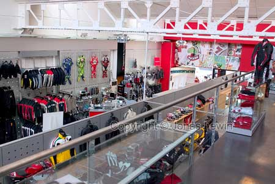

Italy, Milano, 2004-06.
|
The
reason for me to go to Milano: The Dainese D-Store. This is one of the stores
that has the most leather suites in different sizes. Unfortunately I was a
bit disappointed here. I was hoping for quite much more suites to choose
from. But I guess 1-piece racing suites are not the best seller, so they
don't have it in stock. I did learn a few things here. The D-Stores have their own special edition of the suites. These suites are more expensive, and quite unique. And these special editions where nicer than the mainstream colors. And I also learned that you could get your leather suite tailor made for
not much more money than the original. I guess I will try this if I choose
to switch later on. Unfortunately there was no time to visit the city more than the leather
suite store. |